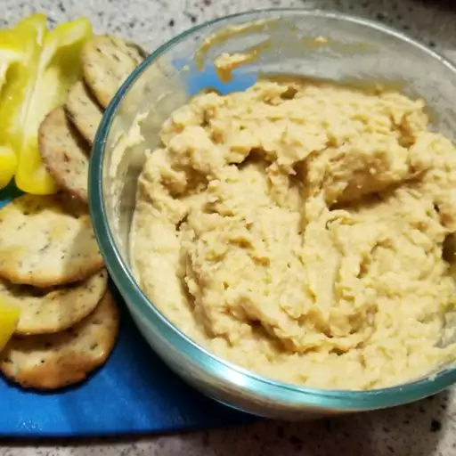

Amazing Hummus Recipe

Description
Learn how to make homemade hummus with this super easy recipe that only takes minutes. Great with veggies or pita chips. Really it's great with anything!
Ingredients
- 1 (15 ounce) can garbanzo beans, drained, liquid reserved
- 1 tablespoon lemon juice
- 1 tablespoon olive oil
- 1 clove garlic, crushed
- 1/2 teaspoon ground cumin
- 1/2 teaspoon salt
- 2 drops sesame oil, or to taste (Optional)
Steps
- Blend garbanzo beans, lemon juice, olive oil, garlic, cumin, salt, and sesame oil in a food processor.
- Stream reserved bean liquid into the mixture as it blends until desired consistency is achieved.
- Serve with pita chips or veggies.